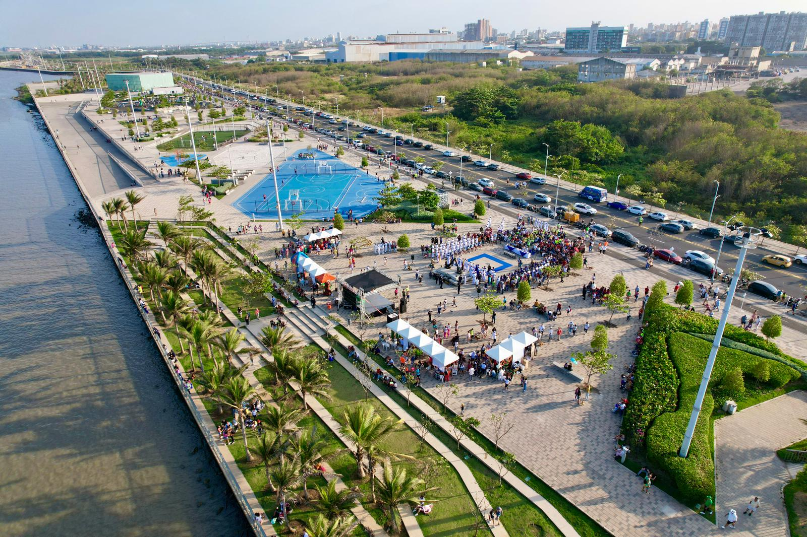
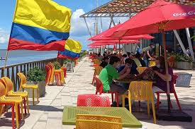
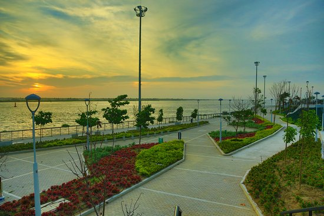
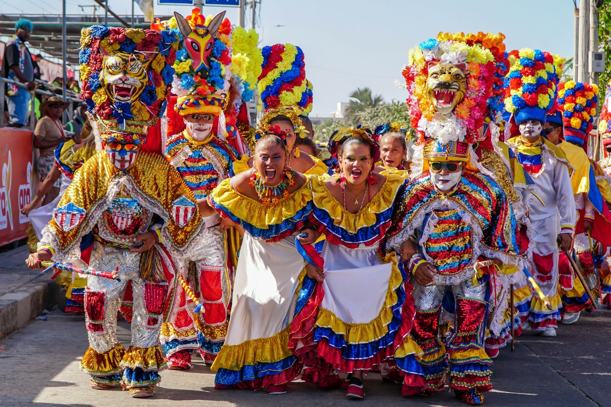
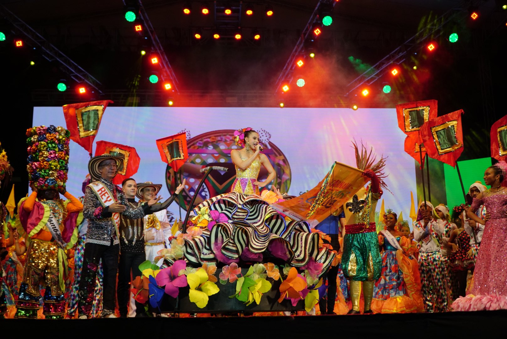
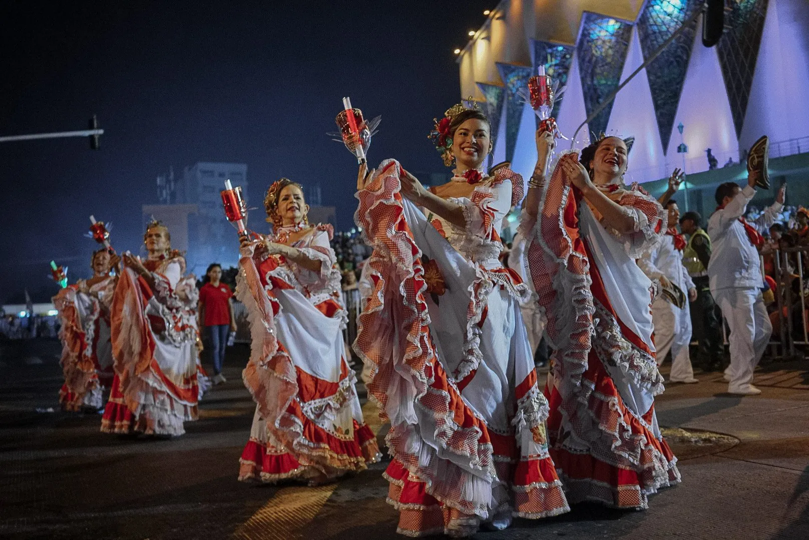
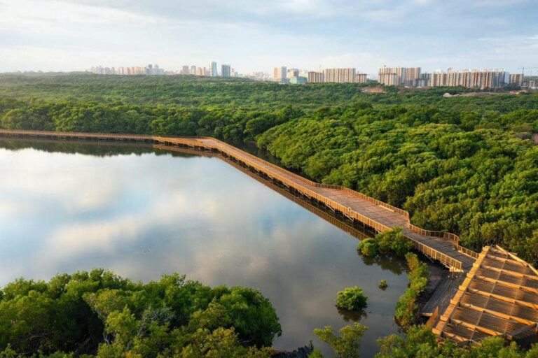
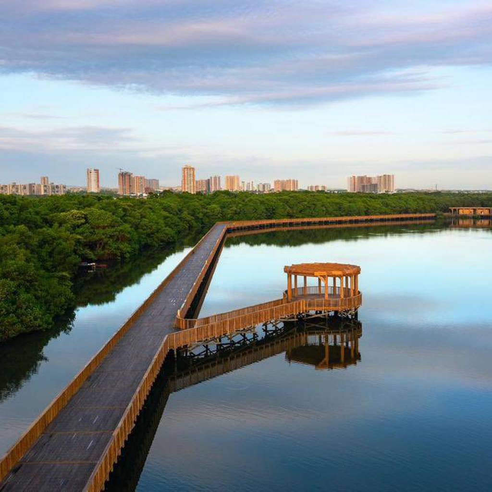
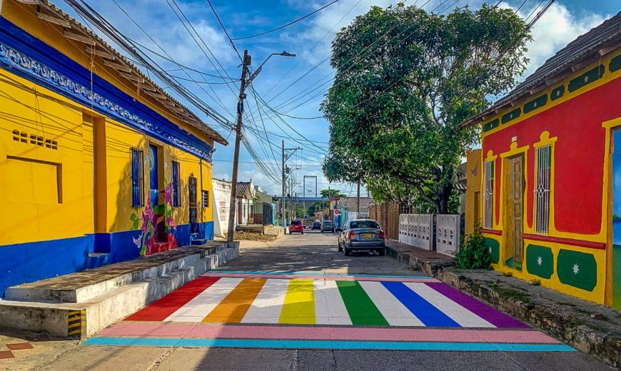
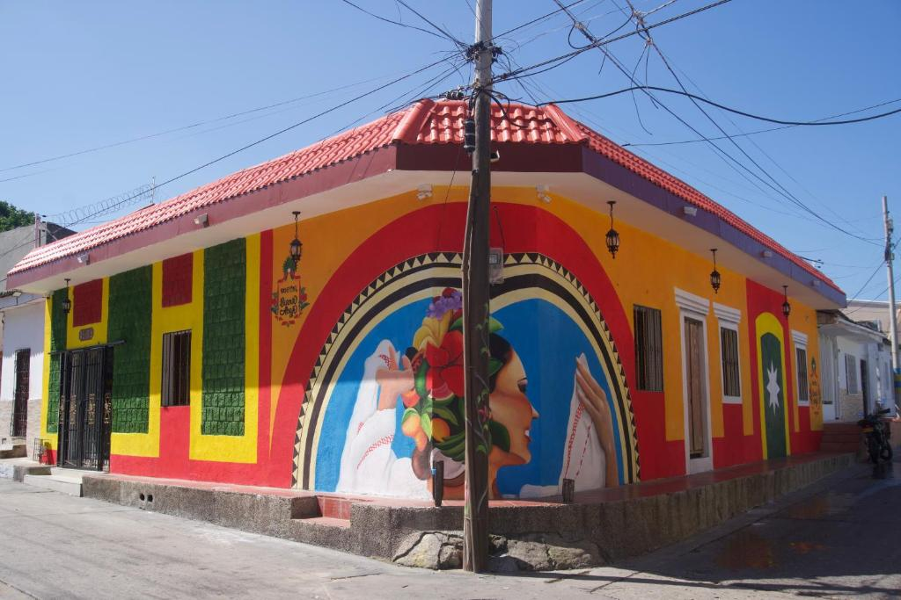

Galería del Malecón



Carnaval de Barranquilla



ecoparque Cienaga Mallorquin


Barrio Abajo



Barranquilla ya no es un secreto. La capital del Atlántico pasó de ser una ciudad desconocida para el turismo a convertirse en uno de los destinos más visitados de Colombia. Su Carnaval, su Malecón, su gastronomía y su gente la pusieron en el mapa — y el mundo la está descubriendo.










Disfruta de la Puerta de Oro de manera responsable y segura.
Usa bloqueador solar y mantente hidratado. El calor del Caribe es intenso, especialmente al mediodía.
Barranquilla es una ciudad para caminar. Te recomendamos ropa ligera de algodón y calzado deportivo.
No arrojes basura en el Gran Malecón ni en las playas. Mantengamos la ciudad limpia.
Utiliza aplicaciones de transporte conocidas o taxis oficiales para moverte con tranquilidad.
No te vayas sin probar una arepa de huevo o un arroz de lisa del negrito de salsa, suero o picante.
Sigue las indicaciones de las autoridades y respeta las señales de tránsito y de playa.